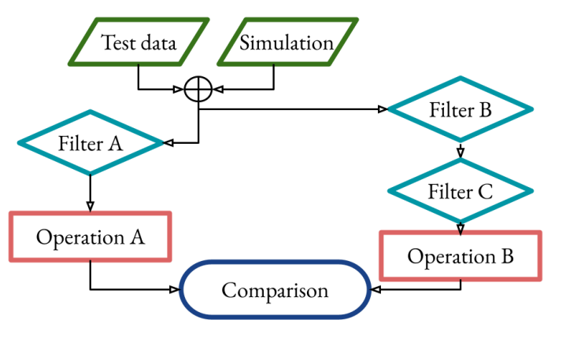

AmpelAstro Workflow

Optimal usage of the next generation surveys requires a workflow directly built and verified for specific science goals. This is also critical for later evaluating e.g. completeness. The default AMPEL classifiers are designed to be general purpose use. Users wishing to have full freedom in using available data sets are instead encouraged to build their own AMPEL workflows. These are built in a local development, based on a combination of existing modules and additional analysis units built for specific science purposes. A completed workflow can be uploaded to the AMPEL live instance and used to process alerts in real-time, or used to parse (“replay”) large volumes of alerts if executed at scale at a computer center.
A specific workflow will not only increase the performance and allow domain-specific algorithms and thresholds to be used, but also enables an analysis to be recreated, distributed and applied on other datasets or simulations.
The first step in creating workflows is to setup a working local AMPEL enivironment, following instructions found here. The example notebooks and workflows in this repository also provides starting points. You can get further feedback from the AMPEL team.